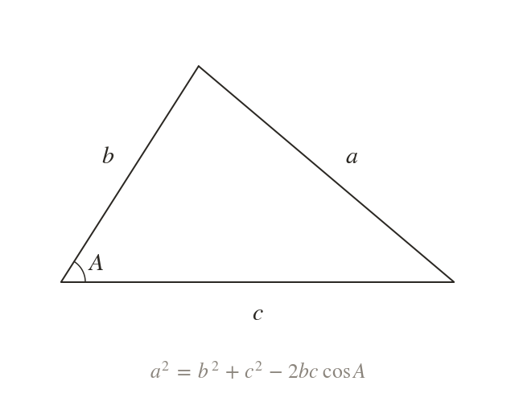
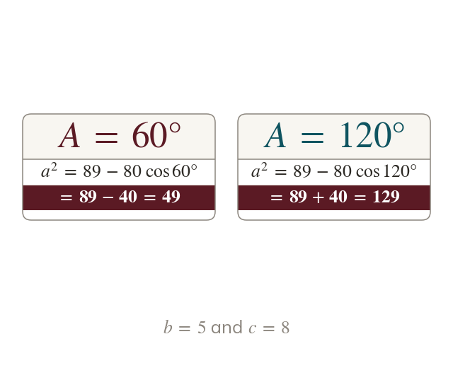
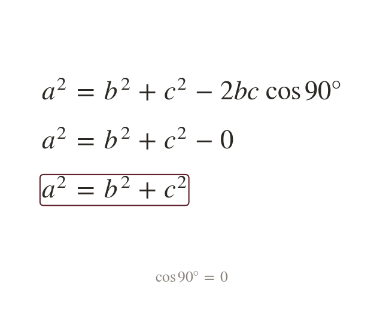
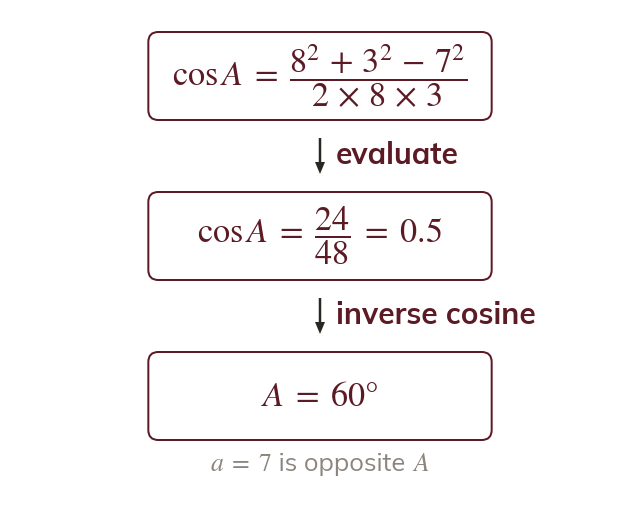
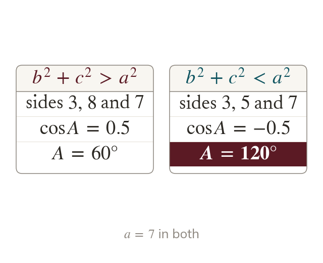
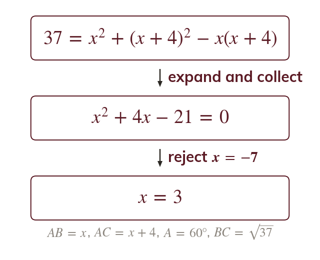

The angle between two sides
The cosine rule links the three sides of any triangle to one angle. It finds the side opposite the angle that lies between two known sides.
The cosine rule extends Pythagoras to every triangle: it finds a side from two sides and the angle between them, or an angle from three sides. The sine rule, next lesson, covers the cases it cannot.
Work down the page at your own pace. Write every answer in your book first, then click to check it.
Read each card, then follow the worked examples one step at a time.

The cosine rule links the three sides of any triangle to one angle. It finds the side opposite the angle that lies between two known sides.

The term is worked out first and then subtracted. When A is obtuse, is negative, so subtracting it adds.

When , and the last term vanishes. The cosine rule then reads
Pick an answer. If it's wrong, the feedback tells you which mistake it was.
Read each card, then follow the worked examples one step at a time.

To find an angle, use The side opposite the angle comes last, after the minus sign.

When is less than is negative and A lies between and The inverse cosine on a calculator gives this obtuse angle directly.

When a side is written in terms of x, the cosine rule becomes an equation in x. It is often a quadratic, and a length must be positive.
Pick an answer. If it's wrong, the feedback tells you which mistake it was.
Finished? Next lesson: 9.2 The Sine Rule.
For each skill, tap the one that is true for you today. Your Revise pages start with anything you mark Not yet.
Your ratings are saved on this device only.
Log in, then search for a code to practise that skill.